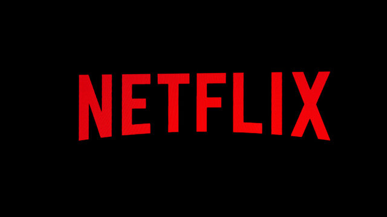

Vyavastha web series
about series : Vyavastha is a 2023 Telugu-language legal drama web series on ZEE5 that retells the David and Goliath story. The series follows a recent lawyer who challenges his senior, who has never lost a case. The series stars Sampath Raj, Hebah Patel, Karthik Rathnam, Gayathri Ravisankar, and Kamna Jethmalani. Anand Ranga directed the series.
season 1
episode 1
description : The first episode of the Telugu legal drama series Vyavastha is titled "Nobody Messes With Me". It is about Vamsi, a recent law graduate who takes on the challenge of facing off against senior lawyer Chakraborty in court over Yamini's husband's murder.
episode 2
description : Episode 2 of the 2023 TV series Vyavastha is titled "No Smoke Without Fire". In this episode, Vamsi, a recent law graduate, denies knowing Yamini outside of the case to the investigation officer during interrogation
episode 3
description : Avinash Chakraborty is a ruthless lawyer who leaves no stone unturned to win a case. What will he do when he is challenged by Vamsi Krishna, his employee's son and a newly graduated and honest lawyer
season 2
episode 1
description : In a tale that resembles the legendary David and Goliath narrative, a recent law graduate Vamsi Krishna challenges a corrupt ruthless senior lawyer Chakraborty, who has monopolised the legal system by creating an organization which has the best lawyers working for him
episode 3
description : Vyavastha is a legal drama that tries to highlight the difference between the settlement and system, has a solid plot, but the narration could have been much tighter and a strong ending could have done wonders. Nevertheless, this Web Series has enough in it for a one-time watch.
episode 3
description : The artists suited to the characters very much and lead actor acting is very natural and simple. Congratulations to the whole team. Can't wait if there is any extension or next season for this.